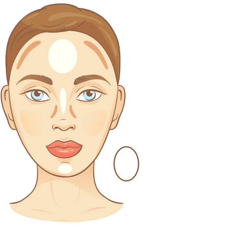
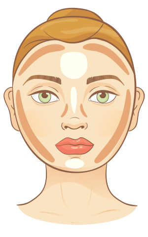
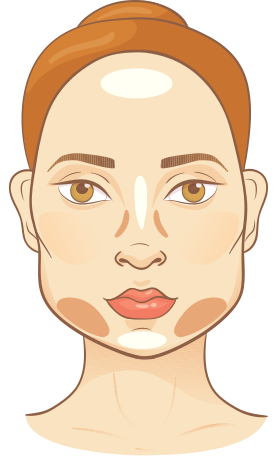
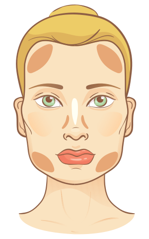
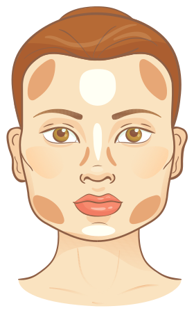
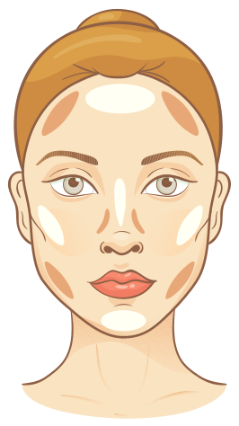
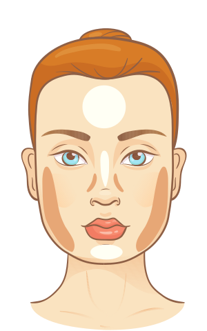
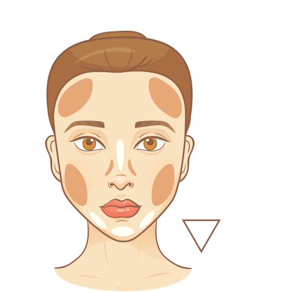
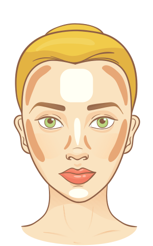

Contouring Guide by Face Shape얼굴형별 컨투어링 가이드顔型別コントゥアリングガイド脸型修容指南臉型修容指南Guía de contouring según la forma del rostroPanduan Contouring Sesuai Bentuk Wajah
Where to shade and where to highlight, based on your measured face shape. A guide, not a rule — your features come first.측정된 얼굴형에 맞춰 어디를 셰이딩하고 어디를 하이라이트할지 알려드려요. 정답이 아닌 참고용 가이드입니다.測定された顔型に合わせて、どこにシェード、どこにハイライトを入れるかをご紹介。あくまで参考ガイドです。根据测得的脸型，告诉你哪里该修容、哪里该打高光。仅供参考，并非定式。根據測得的臉型，告訴你哪裡該修容、哪裡該打亮。僅供參考，並非定式。Dónde dar sombra y dónde iluminar, según la forma de tu rostro medida. Es una guía, no una regla: tus rasgos van primero.Di mana perlu shading dan di mana perlu highlight, sesuai bentuk wajah hasil pengukuranmu. Ini panduan, bukan aturan — fitur wajahmu yang utama.
You'll jump to your measured shape automatically — feel free to browse the others too.측정 결과에 따라 내 얼굴형 섹션으로 자동 이동해요. 다른 얼굴형 팁도 자유롭게 확인하세요.測定結果に応じて自分の顔型へ自動で移動します。他の顔型のコツも自由にどうぞ。会根据测量结果自动跳到你的脸型，其他脸型的技巧也欢迎查看。會根據測量結果自動跳到你的臉型，其他臉型的技巧也歡迎查看。Saltarás automáticamente a tu forma medida; también puedes consultar las demás cuando quieras.Kamu akan langsung diarahkan ke bentuk wajahmu — bebas juga menjelajah bentuk lainnya.
Balanced proportions with length slightly greater than width. Contouring here is polish, not correction — a light hand keeps it natural.세로가 가로보다 살짝 긴 균형 잡힌 비율. 교정보다는 다듬는 컨투어링이라, 가볍게 얹는 게 오히려 자연스러워요.縦が横よりやや長い、バランスのよい比率。ここでのシェーディングは補正ではなく仕上げ。軽く入れるほど自然です。纵向略长于横向的匀称比例。这里的修容是润色而非矫正——下手越轻越自然。縱向略長於橫向的勻稱比例。這裡的修容是潤色而非矯正——下手越輕越自然。Proporciones equilibradas, con un largo ligeramente mayor que el ancho. Aquí el contouring es un acabado, no una corrección: cuanto más ligero, más natural.Proporsi seimbang, panjang sedikit melebihi lebar. Contouring di sini untuk mempercantik, bukan mengoreksi — makin tipis makin natural.

img/contour-oval.svg
🤎 Shade셰이딩シェーディング修容（阴影）修容（陰影）SombrasShading
Lightly under the cheekbones for gentle definition광대 아래를 살짝 — 은은한 입체감용頬骨の下に軽く — さりげない立体感を颧骨下方轻扫，营造若隐若现的立体感顴骨下方輕掃，營造若隱若現的立體感Ligero bajo los pómulos, para una definición sutilTipis-tipis di bawah tulang pipi untuk dimensi halus
A soft shadow along the temples관자놀이에 부드러운 음영こめかみに柔らかい影太阳穴处柔和的阴影太陽穴處柔和的陰影Una sombra suave en las sienesBayangan lembut di pelipis
A whisper of shade just under the jawline to sharpen it턱선 바로 아래에 아주 옅게 — 라인이 또렷해져요フェイスラインの真下にごく薄く — 輪郭が引き締まります下颌线正下方极浅一层，让轮廓更利落下顎線正下方極淺一層，讓輪廓更俐落Un toque casi imperceptible justo bajo la mandíbula para afinarlaSapuan sangat tipis tepat di bawah garis rahang agar makin tegas
✨ Highlight하이라이트ハイライト高光打亮IluminadorHighlight
Center of the forehead이마 중앙額の中央额头中央額頭中央Centro de la frenteTengah dahi
Bridge of the nose and the under-eye triangles콧대와 눈밑 삼각존鼻筋と目の下の三角ゾーン鼻梁与眼下三角区鼻樑與眼下三角區Puente de la nariz y triángulos bajo los ojosBatang hidung dan segitiga bawah mata
Center of the chin턱 중앙顎の中央下巴中央下巴中央Centro del mentónTengah dagu
💡 Pro tip팁ワンポイント小贴士小訣竅ConsejoTips — Blend twice — on a balanced face, a visible contour line is the only real mistake.블렌딩을 두 번 하세요. 균형 잡힌 얼굴에서 유일한 실수는 티 나는 셰이딩 경계선이에요.ぼかしは2回。整った顔で唯一の失敗は、境界線が見えるシェーディングです。晕染两遍。对匀称的脸型来说，唯一的失误就是能看出修容边界。暈染兩遍。對勻稱的臉型來說，唯一的失誤就是能看出修容邊界。Difumina dos veces: en un rostro equilibrado, el único error real es una línea de contorno visible.Baurkan dua kali — di wajah seimbang, satu-satunya kesalahan adalah garis contour yang kelihatan.
Width and length are close, with soft curves. The play is vertical: add length, slim the sides.가로세로 길이가 비슷하고 곡선이 부드러운 얼굴. 핵심은 세로예요 — 길이감을 더하고 옆을 갸름하게.横と縦の長さが近く、曲線が柔らかい輪郭。狙いは縦 — 長さを足して、サイドをすっきりと。横纵长度接近、线条柔和。关键在纵向：拉长脸型、收窄两侧。橫縱長度接近、線條柔和。關鍵在縱向：拉長臉型、收窄兩側。Ancho y largo similares, con curvas suaves. La jugada es vertical: añadir largo y afinar los lados.Lebar dan panjang hampir sama, dengan lekukan lembut. Kuncinya vertikal: tambah kesan panjang, tiruskan sisi wajah.

img/contour-round.svg
🤎 Shade셰이딩シェーディング修容（阴影）修容（陰影）SombrasShading
Long vertical bands along the sides of the face, temple to jaw관자놀이부터 턱까지, 얼굴 옆면에 세로로 길게こめかみから顎まで、顔の側面に縦長のシェード从太阳穴到下颌，沿脸部两侧竖向长扫從太陽穴到下顎，沿臉部兩側豎向長掃Bandas verticales largas por los lados del rostro, de la sien a la mandíbulaSapuan vertikal panjang di sisi wajah, dari pelipis ke rahang
The hollow just below the cheekbones광대뼈 바로 아래 움푹한 곳頬骨のすぐ下のくぼみ颧骨正下方的凹陷处顴骨正下方的凹陷處El hueco justo bajo los pómulosCekungan tepat di bawah tulang pipi
Sides of the jaw — keep the chin itself clear턱 옆면 — 턱 끝은 비워두세요顎の側面 — 顎先は塗らずに残す下颌两侧——下巴尖留白下顎兩側——下巴尖留白Lados de la mandíbula, dejando libre el mentónSisi rahang — biarkan dagu tetap bersih
✨ Highlight하이라이트ハイライト高光打亮IluminadorHighlight
Forehead center down the nose bridge, one vertical line이마 중앙부터 콧대까지 세로 일직선額の中央から鼻筋まで、縦の一本ライン从额头中央到鼻梁，一条竖直线從額頭中央到鼻樑，一條豎直線Del centro de la frente al puente de la nariz, en una sola línea verticalDari tengah dahi turun ke batang hidung, satu garis vertikal
Under-eye triangles눈밑 삼각존目の下の三角ゾーン眼下三角区眼下三角區Triángulos bajo los ojosSegitiga bawah mata
Center of the chin to extend the face downward턱 중앙 — 얼굴이 아래로 길어 보여요顎の中央 — 顔が下に伸びて見えます下巴中央，让脸向下延伸下巴中央，讓臉向下延伸Centro del mentón, para alargar el rostro hacia abajoTengah dagu agar wajah tampak memanjang ke bawah
💡 Pro tip팁ワンポイント小贴士小訣竅ConsejoTips — Keep every stroke vertical — anything horizontal gives the width right back.모든 터치를 세로로. 가로로 바르는 순간 줄인 폭이 도로 살아나요.すべてのタッチを縦方向に。横に入れた瞬間、消した幅が戻ってきます。每一笔都保持竖向——横着扫，收窄的宽度立刻回来。每一筆都保持豎向——橫著掃，收窄的寬度立刻回來。Cada trazo en vertical: cualquier pasada horizontal devuelve el ancho al instante.Semua sapuan harus vertikal — sekali menyapu horizontal, lebarnya langsung balik.
A narrower forehead over a wider jaw. Soften the jaw and bring visual volume up top.이마가 좁고 턱이 넓은 얼굴형. 턱은 부드럽게 줄이고, 시선의 볼륨을 위쪽으로 끌어올리는 게 목표예요.額が狭く、顎まわりが広い輪郭。顎を柔らかく抑え、視線のボリュームを上へ引き上げるのが狙い。额头较窄、下颌较宽。目标是柔化下颌，把视觉重心提到上半张脸。額頭較窄、下顎較寬。目標是柔化下顎，把視覺重心提到上半張臉。Frente más estrecha sobre una mandíbula más ancha. Suaviza la mandíbula y lleva el volumen visual hacia arriba.Dahi lebih sempit dengan rahang lebih lebar. Haluskan rahang dan angkat volume visual ke bagian atas wajah.

img/contour-triangle.svg
🤎 Shade셰이딩シェーディング修容（阴影）修容（陰影）SombrasShading
Jaw corners and along the lower jawline턱 모서리와 아래턱 라인을 따라エラと下顎のラインに沿って下颌角和下颌线一带下顎角和下顎線一帶Ángulos de la mandíbula y a lo largo de su línea inferiorSudut rahang dan sepanjang garis rahang bawah
Lower cheeks, close to the jaw턱과 가까운 볼 아래쪽顎に近い頬の下部靠近下颌的脸颊下部靠近下顎的臉頰下部Parte baja de las mejillas, cerca de la mandíbulaPipi bagian bawah, dekat rahang
Nothing on the forehead — it stays bright이마엔 아무것도 하지 않기 — 밝게 남겨두세요額には何も入れない — 明るいまま残す额头什么都不涂——保持明亮額頭什麼都不塗——保持明亮Nada en la frente: se queda luminosaDahi tidak usah — biarkan tetap cerah
✨ Highlight하이라이트ハイライト高光打亮IluminadorHighlight
Across the forehead — center and temples — to widen the upper face이마 전체 — 중앙과 관자놀이까지 — 상안부를 넓게額全体 — 中央からこめかみまで — 上部を広く見せる整个额头——从中央到太阳穴——拓宽上半脸整個額頭——從中央到太陽穴——拓寬上半臉Toda la frente —centro y sienes— para ensanchar la parte superiorSeluruh dahi — tengah sampai pelipis — agar wajah atas melebar
Under-eye triangles눈밑 삼각존目の下の三角ゾーン眼下三角区眼下三角區Triángulos bajo los ojosSegitiga bawah mata
A small dot on the chin center턱 중앙에 작게 콕顎の中央に小さくひと点下巴中央小小一点下巴中央小小一點Un punto pequeño en el centro del mentónSatu titik kecil di tengah dagu
💡 Pro tip팁ワンポイント小贴士小訣竅ConsejoTips — Slightly elongated, straighter brows also help the upper face read wider.눈썹을 살짝 길고 일자에 가깝게 그리면 상안부가 한층 넓어 보여요.眉をやや長め・直線寄りに描くと、顔の上部がさらに広く見えます。眉形稍拉长、偏平直，也能让上半脸显得更开阔。眉形稍拉長、偏平直，也能讓上半臉顯得更開闊。Unas cejas algo más largas y rectas también ayudan a que la parte superior se vea más amplia.Alis yang sedikit lebih panjang dan lurus juga membuat wajah bagian atas tampak lebih lebar.
Long with angular corners. Visually shorten and soften at the same time.길고 각진 얼굴형. 시각적으로 길이를 줄이면서 동시에 각을 부드럽게.長さがあり、角のある輪郭。長さを視覚的に抑えつつ、角も同時に和らげます。脸型偏长且棱角分明。要在视觉上缩短长度，同时柔化棱角。臉型偏長且稜角分明。要在視覺上縮短長度，同時柔化稜角。Rostro largo y de ángulos marcados. Acorta visualmente y suaviza al mismo tiempo.Wajah panjang dengan sudut tegas. Perpendek secara visual sekaligus haluskan sudutnya.

img/contour-rectangle.svg
🤎 Shade셰이딩シェーディング修容（阴影）修容（陰影）SombrasShading
A soft band along the hairline at the top of the forehead이마 위 헤어라인을 따라 부드럽게 한 줄額の生え際に沿って柔らかくひと筋沿额头发际线柔和地扫一条沿額頭髮際線柔和地掃一條Una banda suave a lo largo del nacimiento del pelo, en lo alto de la frenteSapuan lembut di sepanjang garis rambut di dahi atas
Both jaw corners양쪽 턱 모서리左右のエラ两侧下颌角兩側下顎角Ambos ángulos de la mandíbulaKedua sudut rahang
The bottom edge of the chin to cut length턱 끝 아래 가장자리 — 길이를 잘라줘요顎先の下端 — 長さをカットします下巴底缘——截断长度下巴底緣——截斷長度El borde inferior del mentón, para recortar el largoTepi bawah dagu untuk memotong kesan panjang
✨ Highlight하이라이트ハイライト高光打亮IluminadorHighlight
Under-eyes, swept horizontally outward눈밑을 바깥쪽으로 가로로 길게目の下を外側へ横長に眼下向外横扫眼下向外橫掃Bajo los ojos, difuminado en horizontal hacia afueraBawah mata, disapu horizontal ke arah luar
Fronts of the cheeks볼 앞쪽頬の前面脸颊前侧臉頰前側Parte frontal de las mejillasBagian depan pipi
Skip the long nose stripe — it adds length back콧대 세로 하이라이트는 생략 — 길이가 되살아나요鼻筋の縦ハイライトは省略 — 長さが戻ってしまいます省略鼻梁竖高光——那会把长度加回来省略鼻樑豎高光——那會把長度加回來Evita la línea larga en la nariz: devuelve el largoLewati garis panjang di hidung — itu mengembalikan kesan panjang
💡 Pro tip팁ワンポイント小贴士小訣竅ConsejoTips — Blush swept horizontally across both cheeks visually shortens the face.블러셔를 양 볼에 가로로 쓸면 얼굴이 짧아 보여요.チークを両頬に横方向に入れると、顔が短く見えます。腮红在两颊横向晕开，脸会显短。腮紅在兩頰橫向暈開，臉會顯短。El rubor extendido en horizontal por ambas mejillas acorta visualmente el rostro.Blush yang disapu horizontal di kedua pipi membuat wajah tampak lebih pendek.
Broad forehead corners and a strong, angular jaw. Round off the four corners.이마 모서리가 넓고 턱이 뚜렷하게 각진 얼굴형. 네 모서리를 둥글게 깎는 게 핵심이에요.額の角が広く、顎のラインがはっきり角ばった輪郭。四つの角を丸く削るのがポイント。额角宽、下颌方正有力。关键是把四个角修圆。額角寬、下顎方正有力。關鍵是把四個角修圓。Ángulos de la frente amplios y mandíbula fuerte y marcada. Se trata de redondear las cuatro esquinas.Sudut dahi lebar dan rahang tegas menyudut. Intinya: bulatkan keempat sudutnya.

img/contour-square.svg
🤎 Shade셰이딩シェーディング修容（阴影）修容（陰影）SombrasShading
Both temples at the hairline corners헤어라인 양쪽 모서리(관자놀이)生え際の両角（こめかみ）发际线两侧的额角（太阳穴）髮際線兩側的額角（太陽穴）Ambas sienes, en las esquinas del nacimiento del peloKedua pelipis di sudut garis rambut
Both jaw angles양쪽 턱 각左右のエラ两侧下颌角兩側下顎角Ambos ángulos de la mandíbulaKedua sudut rahang
Softly below the cheekbones광대 아래를 부드럽게頬骨の下を柔らかく颧骨下方轻柔带过顴骨下方輕柔帶過Suavemente bajo los pómulosLembut di bawah tulang pipi
✨ Highlight하이라이트ハイライト高光打亮IluminadorHighlight
Center of the forehead이마 중앙額の中央额头中央額頭中央Centro de la frenteTengah dahi
Under-eye triangles눈밑 삼각존目の下の三角ゾーン眼下三角区眼下三角區Triángulos bajo los ojosSegitiga bawah mata
Center of the chin — building a vertical oval of light턱 중앙 — 세로로 긴 빛의 타원을 만들어요顎の中央 — 縦長の光の楕円をつくります下巴中央——打造一个纵向的光椭圆下巴中央——打造一個縱向的光橢圓Centro del mentón: construyendo un óvalo vertical de luzTengah dagu — membentuk oval cahaya vertikal
💡 Pro tip팁ワンポイント小贴士小訣竅ConsejoTips — Blend with small circular motions — echo the curves you're creating.작은 원을 그리듯 블렌딩하세요. 만들고 싶은 곡선을 손끝으로 그대로 그리는 거예요.小さな円を描くようにぼかして。つくりたい曲線を指先でなぞるイメージです。用画小圆的方式晕染——用指尖描出你想要的弧线。用畫小圓的方式暈染——用指尖描出你想要的弧線。Difumina con pequeños movimientos circulares: dibuja con los dedos las curvas que quieres crear.Baurkan dengan gerakan melingkar kecil — ikuti lekukan yang ingin kamu bentuk.
Cheekbones are the widest point, with a narrower forehead and chin.광대가 가장 넓고, 이마와 턱이 상대적으로 좁은 얼굴형.頬骨が最も広く、額と顎が相対的に狭い輪郭。颧骨是最宽的部位，额头和下巴相对较窄。顴骨是最寬的部位，額頭和下巴相對較窄。Los pómulos son el punto más ancho, con frente y mentón más estrechos.Tulang pipi adalah titik terlebar, dengan dahi dan dagu lebih sempit.

img/contour-diamond.svg
🤎 Shade셰이딩シェーディング修容（阴影）修容（陰影）SombrasShading
Only the outer peaks of the cheekbones광대뼈 바깥쪽 튀어나온 지점만頬骨の外側の張り出しだけ只修颧骨外侧最突出的位置只修顴骨外側最突出的位置Solo los picos externos de los pómulosHanya puncak luar tulang pipi
Leave temples and jaw untouched — they're already narrow관자놀이와 턱은 건드리지 않기 — 이미 좁으니까요こめかみと顎は触らない — もともと狭いので太阳穴和下颌不要动——它们本来就窄太陽穴和下顎不要動——它們本來就窄Sienes y mandíbula sin tocar: ya son estrechasPelipis dan rahang jangan disentuh — sudah sempit dari sananya
✨ Highlight하이라이트ハイライト高光打亮IluminadorHighlight
Center and sides of the forehead to open it up이마 중앙과 양옆 — 이마를 넓혀줘요額の中央と両サイド — 額を広く見せる额头中央和两侧——把额头打开額頭中央和兩側——把額頭打開Centro y laterales de la frente, para abrirlaTengah dan sisi dahi agar tampak lebih terbuka
Wide under-eye triangles to fill the midface눈밑 삼각존을 넓게 — 중안부를 채워요目の下の三角ゾーンを広めに — 中顔面を満たす眼下三角区放宽——填满中庭眼下三角區放寬——填滿中庭Triángulos amplios bajo los ojos, para llenar el tercio medioSegitiga bawah mata yang lebar untuk mengisi wajah tengah
Center of the chin to soften the point턱 중앙 — 뾰족함을 부드럽게顎の中央 — 尖りを柔らかく下巴中央——柔化尖度下巴中央——柔化尖度Centro del mentón, para suavizar la puntaTengah dagu untuk melembutkan ujungnya
💡 Pro tip팁ワンポイント小贴士小訣竅ConsejoTips — Blush on the cheek fronts — never on the peaks — melts cheekbone width.블러셔는 볼 앞쪽에만. 광대 꼭대기에 얹으면 폭이 더 살아나요.チークは頬の前面だけに。頬骨の頂点にのせると幅が強調されます。腮红只上在脸颊前侧——千万别扫在颧骨最高点，否则宽度更明显。腮紅只上在臉頰前側——千萬別掃在顴骨最高點，否則寬度更明顯。El rubor va en el frente de las mejillas —nunca en los picos—: así se funde el ancho de los pómulos.Blush hanya di bagian depan pipi — jangan pernah di puncak tulang pipi — supaya lebarnya menyamar.
Clearly longer than wide. Think horizontal: shorten the face, widen the middle.가로보다 세로가 뚜렷하게 긴 얼굴형. 발상을 가로로 — 길이는 줄이고 중앙은 넓혀요.横より縦がはっきり長い輪郭。発想を横に — 長さを抑え、中央に幅を。纵向明显长于横向。思路要横向：缩短脸长、加宽中庭。縱向明顯長於橫向。思路要橫向：縮短臉長、加寬中庭。Claramente más largo que ancho. Piensa en horizontal: acortar el rostro y ensanchar el centro.Jelas lebih panjang daripada lebar. Berpikirlah horizontal: perpendek wajah, lebarkan bagian tengah.

img/contour-oblong.svg
🤎 Shade셰이딩シェーディング修容（阴影）修容（陰影）SombrasShading
A band along the top hairline이마 위 헤어라인을 따라 한 줄額上部の生え際に沿ってひと筋沿头顶发际线扫一条沿頭頂髮際線掃一條Una banda a lo largo del nacimiento del peloSapuan di sepanjang garis rambut atas
The bottom of the chin턱 끝 아래顎先の下下巴底部下巴底部La base del mentónBagian bawah dagu
Keep the sides light — slimming them adds length옆면은 옅게 — 옆을 깎을수록 더 길어 보여요側面は控えめに — 削るほど長く見えます两侧要浅——越修两侧脸越长兩側要淺——越修兩側臉越長Los lados apenas: afinarlos añade largoSisi wajah cukup tipis — makin ditiruskan makin panjang kelihatannya
✨ Highlight하이라이트ハイライト高光打亮IluminadorHighlight
Under-eyes stretched outward toward the temples눈밑에서 관자놀이 쪽으로 가로로 길게目の下からこめかみへ横に伸ばす眼下向太阳穴方向横向拉长眼下向太陽穴方向橫向拉長Bajo los ojos, estirado hacia las sienesBawah mata ditarik horizontal ke arah pelipis
Fronts of the cheeks볼 앞쪽頬の前面脸颊前侧臉頰前側Parte frontal de las mejillasBagian depan pipi
A short touch on the nose bridge only — no full stripe콧대엔 짧게 콕 — 세로 줄은 금물鼻筋は短くひと点だけ — 縦ラインは禁物鼻梁只点一小段——忌整条竖线鼻樑只點一小段——忌整條豎線Solo un toque corto en el puente de la nariz, nada de línea completaCukup sentuhan pendek di batang hidung — jangan garis penuh
💡 Pro tip팁ワンポイント小贴士小訣竅ConsejoTips — Go horizontal with everything — blush, highlight, even eyeshadow direction.전부 가로로 — 블러셔도, 하이라이트도, 아이섀도 방향까지도.すべて横方向に — チークもハイライトも、アイシャドウの入れ方まで。一切都横着来——腮红、高光，连眼影的晕染方向也是。一切都橫著來——腮紅、高光，連眼影的暈染方向也是。Todo en horizontal: el rubor, el iluminador e incluso la dirección de la sombra de ojos.Semuanya serba horizontal — blush, highlight, bahkan arah eyeshadow.
A wide forehead tapering to a narrow chin. Rebalance toward the lower face.이마가 넓고 턱으로 갈수록 좁아지는 얼굴형. 무게중심을 아래쪽으로 되돌리는 게 목표예요.額が広く、顎に向かって細くなる輪郭。重心を顔の下半分へ戻すのが狙い。额头宽、往下巴逐渐收窄。目标是把重心拉回下半张脸。額頭寬、往下巴逐漸收窄。目標是把重心拉回下半張臉。Frente ancha que se estrecha hacia un mentón fino. Reequilibra hacia la parte baja del rostro.Dahi lebar yang menyempit ke dagu. Kembalikan keseimbangan ke wajah bagian bawah.

img/contour-invertedTriangle.svg
🤎 Shade셰이딩シェーディング修容（阴影）修容（陰影）SombrasShading
Forehead sides along the hairline헤어라인을 따라 이마 양옆生え際に沿って額の両サイド沿发际线修额头两侧沿髮際線修額頭兩側Laterales de la frente, siguiendo el nacimiento del peloSisi dahi di sepanjang garis rambut
Both temples양쪽 관자놀이左右のこめかみ两侧太阳穴兩側太陽穴Ambas sienesKedua pelipis
The very tip of the chin, lightly턱 맨 끝을 아주 옅게顎の先端をごく薄く下巴最尖端轻轻带过下巴最尖端輕輕帶過La punta del mentón, con suavidadUjung dagu, tipis saja
✨ Highlight하이라이트ハイライト高光打亮IluminadorHighlight
Under-eye triangles눈밑 삼각존目の下の三角ゾーン眼下三角区眼下三角區Triángulos bajo los ojosSegitiga bawah mata
Sides of the jawline to add width below턱선 양옆 — 아래쪽에 폭을 더해요フェイスラインの両脇 — 下側に幅を足します下颌线两侧——给下半脸加宽下顎線兩側——給下半臉加寬Lados de la mandíbula, para añadir ancho abajoSisi garis rahang untuk menambah lebar di bawah
Center of the chin턱 중앙顎の中央下巴中央下巴中央Centro del mentónTengah dagu
💡 Pro tip팁ワンポイント小贴士小訣竅ConsejoTips — Blush placed low and swept horizontally shifts weight toward the jaw.블러셔를 평소보다 낮게, 가로로 쓸면 무게중심이 턱 쪽으로 내려와요.チークをいつもより低め・横方向に入れると、重心が顎側へ下がります。腮红位置比平时低一些、横向晕开，重心就会移向下颌。腮紅位置比平時低一些、橫向暈開，重心就會移向下顎。El rubor colocado bajo y difuminado en horizontal desplaza el peso visual hacia la mandíbula.Blush yang dipasang agak rendah dan disapu horizontal menggeser kesan berat ke arah rahang.
Like the inverted triangle but softer, often with a widow's peak. Balance the narrow chin against the open forehead.역삼각형보다 곡선이 부드럽고 이마 라인이 M자를 그리기도 하는 얼굴형. 좁은 턱과 시원한 이마의 균형을 잡아요.逆三角より曲線が柔らかく、生え際がM字を描くことも。狭い顎と広い額のバランスを取ります。比倒三角更柔和，发际线常呈美人尖。要在窄下巴和开阔额头之间找平衡。比倒三角更柔和，髮際線常呈美人尖。要在窄下巴和開闊額頭之間找平衡。Como el triángulo invertido pero más suave, a menudo con pico de viuda. Equilibra el mentón fino frente a la frente despejada.Mirip segitiga terbalik tapi lebih lembut, sering dengan garis rambut membentuk huruf M. Seimbangkan dagu sempit dengan dahi yang lapang.

img/contour-heart.svg
🤎 Shade셰이딩シェーディング修容（阴影）修容（陰影）SombrasShading
Upper forehead sides and temples이마 위쪽 양옆과 관자놀이額上部の両サイドとこめかみ额头上部两侧和太阳穴額頭上部兩側和太陽穴Laterales superiores de la frente y sienesSisi atas dahi dan pelipis
Lightly below the cheekbones광대 아래를 옅게頬骨の下を薄く颧骨下方浅浅带过顴骨下方淺淺帶過Ligero bajo los pómulosTipis di bawah tulang pipi
The chin point턱 끝顎の先端下巴尖下巴尖La punta del mentónUjung dagu
✨ Highlight하이라이트ハイライト高光打亮IluminadorHighlight
A small touch at the forehead center이마 중앙에 작게額の中央に小さく额头中央小范围額頭中央小範圍Un toque pequeño en el centro de la frenteSentuhan kecil di tengah dahi
Under-eye triangles눈밑 삼각존目の下の三角ゾーン眼下三角区眼下三角區Triángulos bajo los ojosSegitiga bawah mata
Center of the chin to round it턱 중앙 — 끝을 둥글게 보이게顎の中央 — 先端を丸く見せる下巴中央——让尖端显得圆润下巴中央——讓尖端顯得圓潤Centro del mentón, para redondearloTengah dagu agar tampak membulat
💡 Pro tip팁ワンポイント小贴士小訣竅ConsejoTips — A fuller, slightly overlined lip adds presence to the narrow lower face.립 라인을 살짝 크게, 도톰하게 그리면 좁은 하관에 존재감이 생겨요.リップをやや大きめ・ふっくら描くと、細い下顔面に存在感が生まれます。唇线稍微画满一些、更饱满，窄小的下半脸就有了存在感。唇線稍微畫滿一些、更飽滿，窄小的下半臉就有了存在感。Un labio más lleno y ligeramente perfilado por fuera da presencia a la parte baja del rostro.Bibir yang digambar sedikit lebih penuh memberi kehadiran pada wajah bawah yang sempit.
Shade and highlight colors depend on your skin tone, not your face shape. Fair or cool-toned skin suits a soft taupe contour; deeper or warm-toned skin glows with warm bronze and a more pigmented gold highlight. If a contour ever looks gray or ashy on you, it's the color — go warmer, not darker. You can check your undertone with Renka's personal color analysis.셰이딩·하이라이트 컬러는 얼굴형이 아니라 피부 톤이 정해요. 밝거나 쿨톤인 피부엔 부드러운 토프(회갈색)가, 딥하거나 웜톤인 피부엔 웜 브론즈와 발색 진한 골드 하이라이트가 어울려요. 셰이딩이 잿빛으로 떠 보인다면 색이 안 맞는 거예요 — 더 어둡게가 아니라 더 웜하게 바꿔보세요. 내 언더톤은 Renka 퍼스널컬러 분석에서 확인할 수 있어요.シェードとハイライトの色は、顔型ではなく肌のトーンで決まります。明るい肌・ブルベにはソフトなトープ、深い肌・イエベにはウォームブロンズと発色のよいゴールドのハイライトが似合います。シェードがグレーに浮いて見えたら色が合っていないサイン — 暗くではなく、より温かい色へ。自分のアンダートーンはRenkaのパーソナルカラー分析で確認できます。修容和高光的颜色取决于肤色，而不是脸型。白皙或冷调肤色适合柔和的灰棕色；较深或暖调肤色适合暖棕铜色和显色度更高的金色高光。如果修容在脸上显灰，说明颜色不对——要换更暖的，而不是更深的。你的冷暖调可以在 Renka 的个人色彩分析中确认。修容和打亮的顏色取決於膚色，而不是臉型。白皙或冷調膚色適合柔和的灰棕色；較深或暖調膚色適合暖棕銅色和顯色度更高的金色打亮。如果修容在臉上顯灰，說明顏色不對——要換更暖的，而不是更深的。你的冷暖調可以在 Renka 的個人色彩分析中確認。Los colores de sombra e iluminador dependen de tu tono de piel, no de la forma de tu rostro. La piel clara o de subtono frío pide un contorno taupe suave; la piel más profunda o cálida luce con bronce cálido y un iluminador dorado más pigmentado. Si un contorno se ve gris o ceniciento, es el color: ve hacia algo más cálido, no más oscuro. Puedes comprobar tu subtono con el análisis de color personal de Renka.Warna shading dan highlight ditentukan oleh warna kulitmu, bukan bentuk wajah. Kulit cerah atau bernada dingin cocok dengan contour taupe lembut; kulit lebih gelap atau hangat justru menyala dengan bronze hangat dan highlight emas yang lebih pekat. Kalau contour terlihat abu-abu di kulitmu, berarti warnanya yang salah — pilih yang lebih hangat, bukan lebih gelap. Undertone-mu bisa dicek lewat analisis warna personal Renka.
These placements are general guidance, not rules. Product texture and personal taste matter too — use them as a starting point.위 위치는 일반적인 가이드일 뿐 정답이 아니에요. 제품 제형과 개인 취향도 중요하니 출발점으로 활용해 주세요.ここでの位置はあくまで一般的な目安です。コスメの質感や好みも大切に、出発点としてお使いください。以上位置仅为一般参考，并非定式。产品质地和个人喜好同样重要，请作为起点参考。以上位置僅為一般參考，並非定式。產品質地和個人喜好同樣重要，請作為起點參考。Estas ubicaciones son orientación general, no reglas. La textura del producto y tu gusto personal también cuentan: úsalas como punto de partida.Penempatan di atas adalah panduan umum, bukan aturan. Tekstur produk dan selera pribadi juga penting — jadikan ini titik awal.